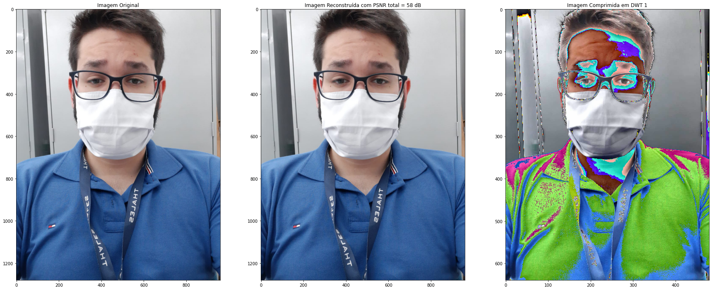
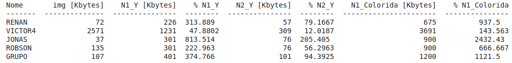

Procedimentos
Nesta prática, foram feitas alterações simples em imagens utilizando a linguagem Python na ferramenta Google Colab.
Na primeira parte do laboratório foram obtidas as compenentes de uma imagem (aproximação, bordas horizontais, bordas verticais e bordas diagonais) por meio da transformada de Haar. Foram reconstruidas as imagens em preto em branco utilizando a transformada inversa de Haar. Foi calculado a MSE e PSNR_Y de cada imagem reconstruída em comparação com a original
Na segunda parte do laboratório as imagens foram codificadas em dois níveis de DWT para fins de comparação com imagem original e imagem de codificação de DWT em um nível.
Na terceira parte do laboratório foi feita a separação da imagem nos planos de cores vermelho, verde e azul. Para cada plano foi feita a transformada de Haar e mostradas as imagens resultantes da transformada. foram reconstruídas duas imagens. A primeira é a imagem original a partir do planos de cores que haviam sido separados e a segunda a reconstrução a partir da compenente de aproximação da DWT. Foram calculados o MSE e PSNR das reconstruções.
Na quarta parte do laboratório foi pego uma imagem e separada em suas componentes YCrCb. Para cada uma das componentes foi calculada a DWT, pego a sua aproximação e convertido novamente para RGB.
Tudo isto foi feito utilizando as bibliotecas Matplotlib, Numpy e OpenCV.
Link para o Google Colab
Resultados - 01
Codificação de Luminância (P&B) com DWT para as fotos dos membros do grupo
Acima temos a codificação em DWT das imagens em Preto e Branco que tem como resultado a separação em componentes de Aproximação, Verticais, Horizontais e Diagonais, respectivamente para cada imagem dos membros do grupo. Observa-se que as componentes Diagonais tem menor presença no plot, pois esta é a componente que carrega a informação das frequências mais altas da imagem.
Reconstrução de imagem a partir de aproximação da DWT

Acima foi feita a reconstrução das imagens em tons de cinza à partir da codificação em DWT feita anteriormente. Além disso, foram calculadas o MSE (Erro Quadrático Médio) para cada imagem. Observa-se que o erro das imagens reconstruídas em P&B é da ordem de 10−24 e a PSNR em torno de 280 dB.
Resultados - 02
Teste das Funções de Multiresolução wavedec2() e waverec2()
Aqui temos a codificação em dois níveis de DWT. Observa-se que no segundo nível das componentes, os detalhes são realçados em cada uma, evideenciando a filtragem dupla aplicada na DWT de dois níveis. É importante destacar, que a componente de aproximação, mesmo sendo filtrada duas vezes, ainda preserva, em boa parte, as caracteríticas da imagem original.
Resultados - 03
Reconstrução de Imagem Colorida
Acima, foram feitas as reconstruções coloridas das fotos à partir das DWTs das componentes RGB separadas. Observa-se um erro quadrático médio da ordem de 10−2 e uma PSNR de 60 dB. Comparando com as reconstruções em P&B, é evidente um erro maior. Entretanto, de forma qualitativa, a reconstrução ainda é muito próxima à imagem original, conforme célula acima.
Compressão YCrCb
Acima temos a tabela que demonstra o tamanho de cada imagem (KB), o tamanho da imagem comprimida em DWT (KB), e a taxa de compressão(%). Observa-se que para maioria das imagens a compressão não foi teve um ganho expressivo ou até mesmo aumentou o tamanho da imagem em KB. Uma possível explicação para o aumento do tamanho, pode ser o fato das imagens já estarem comprimidas por outro algoritmo, pois foram compartilhadas através do aplicativo Whatsapp. Destaca-se a imagem do Victor, a qual não foi compartilhada pelo Whatsapp, alcançando compressões de 47,8% e 12,0% para DWT 1 e 2, respectivamente, de luminância.